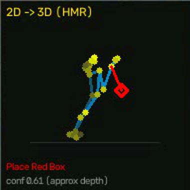
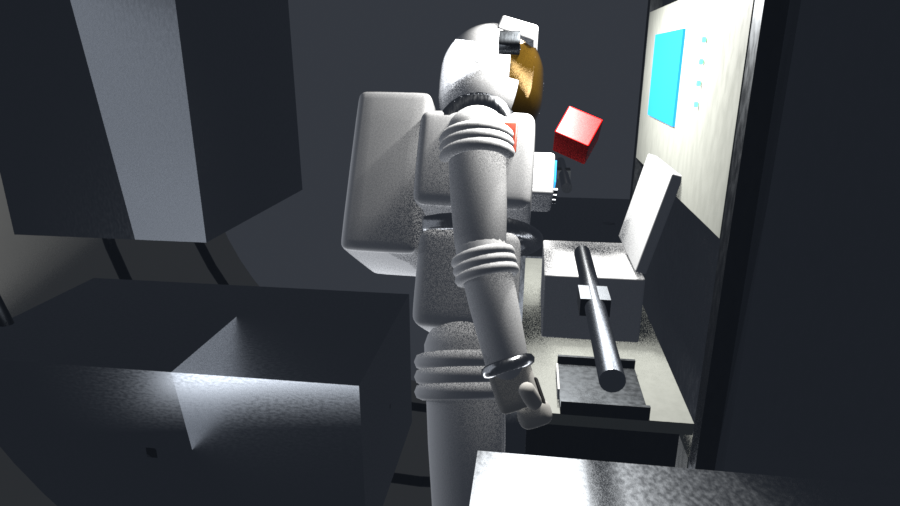

Technical Approach · System Architecture
Astronaut Activity Recognition (HAR) for the 8-step BAS protocol · SIH 2026 · PS 26174
Runs fully offline on one laptop (RTX 3050)
14–16 FPS live, about 70 ms per frame
14–16 FPS live, about 70 ms per frame
{{i:camera}} Capture
{{i:camera}}Rack cameraUSB webcam or phone, any fps
{{i:timer}}Frame samplerfixed 100 ms tick, independent of camera fps
2Upright view + rack framebody rotated upright before pose; joints measured from the rack, not the lens
ArUco markersoptional, fixes the rack pose
{{i:eye}} Vision (3 models, run together)
A · objects
YOLOYOLOv8n box detectorred box · yellow box · main box, with position and size
B · 2D pose
{{b:mediapipe}}MediaPipe Pose33 body landmarks (x, y, z, visibility)
C · 3D pose (HMR), our own model
Trackbody box
Crop + rotate224², upright
3HMR3DNetMobileNetV3-S
3D joints33 × xyz

Live output of branch C.
3D skeleton at a fixed viewing angle; the box the task needs is drawn and linked to the nearest hand.
Trained on rendered suited astronauts, where pretrained HMR models fail.
3D skeleton at a fixed viewing angle; the box the task needs is drawn and linked to the nearest hand.
Trained on rendered suited astronauts, where pretrained HMR models fail.
{{b:pytorch}} Temporal model
Fusion gateuses 3D joints when HMR is confident, 2D otherwise; adds the boxes
143-d feature vectorone per 100 ms tick
Sliding windowlast 3 s = 30 ticks
BiLSTM, 3 layers × 256+ attention, 8 step classes
5Entropy gatepass only if conf ≥ 0.65 and entropy ≤ 1.4 nats
{{i:list-checks}} Protocol engine
protocol.json8 steps, required objects
Confirm stepsame step for 5 ticks in a row
Advance + suggest next“Step 3 complete. Step 4: examine red box.”
Order checkskipped, out of order, repeated
HOLD + recoverwarns, waits for the missed step, then loops back
4Contract guardrefuses a model trained on other features
{{i:bell-ring}} Outputs
{{i:volume-2}}Voice alertsoffline text-to-speech
{{b:qt}}DashboardPyQt6 HUD + 3D panel

{{i:file-text}}Event logJSONL + TXT
{{b:ffmpeg}}UDP streamlive feed to ground
{{i:film}}MP4 recordingwith overlay
{{i:flask-conical}} Offline training · weights frozen for deployment
1

{{b:blender}}Blender digital twinrack, boxes and suited astronaut at 0–180° roll, pitch, failed lights. Joints and step labels come free from the render.
33 takes · 31,891 frames
33 takes · 31,891 frames
{{i:film}}Real / AI-generated clipsstep spans labelled by hand; closes the synthetic-to-real gap
{{i:layers}}Sequence builderruns the same feature code as the live loop, so training input = live input
{{b:nvidia}}Train, split by take (never by frame)
YOLOYOLOv8n boxes: mAP@50 0.934
{{i:brain-circuit}} HMR3DNet: supervised by Blender 3D joints
{{b:pytorch}} BiLSTM: 30 × 143 windows, 8 classes
{{i:shield-check}}promote_modelchecks feature layout, sample clock and detector match the runtime, then exports
{{b:onnx}} .pt / .onnx
{{i:target}} Problem statement → our answer
| Recognise each step | BiLSTM over 3 s of pose and object features |
| Suggest the next step | protocol engine reads protocol.json and speaks step N+1 |
| Catch skipped / out-of-order steps | order check, then HOLD until the missed step is done |
| Voice alerts | offline TTS, only after the entropy gate |
| Log and live stream | JSONL + TXT log, UDP stream, MP4 |
| Microgravity, suited crew | upright view, rack frame and HMR3DNet handle any body roll |
| Offline, on board | one RTX 3050 laptop, no network calls |
{{i:chart-no-axes-column}} Measured on held-out takes
| Box detector | YOLOv8n, mAP@50 | 0.934 |
| 3D pose, 60° roll | pretrained HMR → ours | 0.00 → 0.77 |
| 3D pose, inverted | pretrained HMR → ours | 0.60 → 0.91 |
| Step classifier | unseen takes | 73% |
| Live speed | RTX 3050, end to end | 14–16 FPS |
Exactly 90° edge-on is still weak (0.07); the fusion gate falls back to 2D there.
{{i:sparkles}} What is new in our approach
1Digital-twin training data. 31,891 labelled frames with no hand annotation.
2Orientation-proof input. Upright view + rack frame, so a floating crew looks the same.
3Own 3D pose model for spacesuits, trained on rendered ground truth.
4Train = serve contract. A mismatched model is refused at load time.
5Confidence-gated alerts. Speaks only when the model is sure.
Tech stack:
{{b:python}}Python{{b:pytorch}}PyTorch{{b:opencv}}OpenCV{{b:mediapipe}}MediaPipe
YOLOUltralytics{{b:blender}}Blender{{b:onnx}}ONNX{{b:qt}}PyQt6
{{b:ffmpeg}}FFmpeg{{b:numpy}}NumPy{{b:nvidia}}CUDA{{b:pytest}}pytest (56 tests)
data flowtrained weights / contractnour innovation